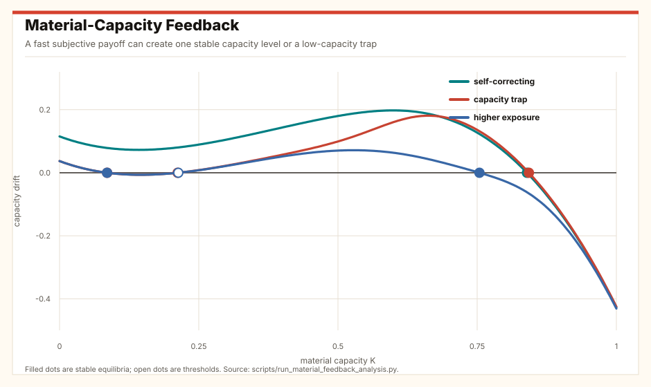
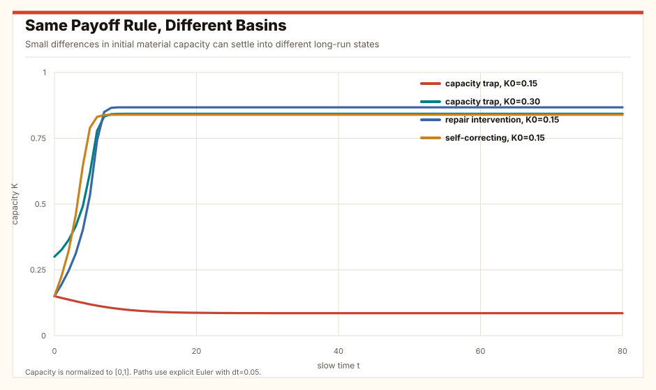
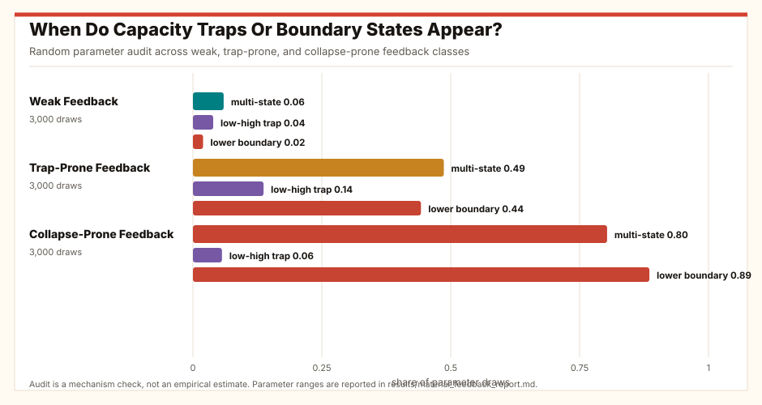
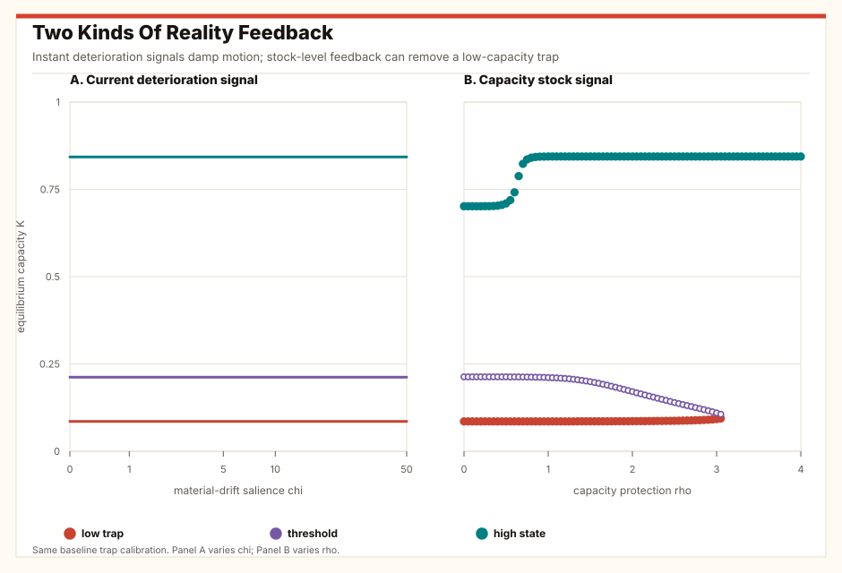
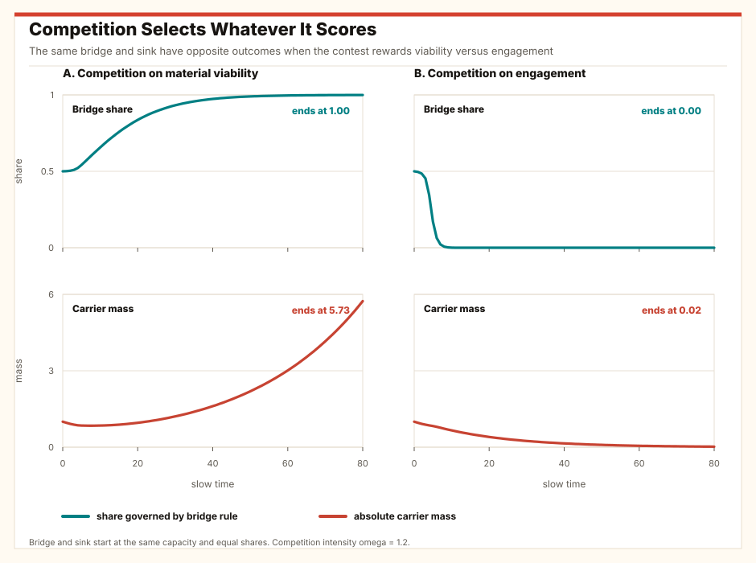

When Preferences Move Faster Than Equilibrium
Endogenous utility, material-capacity feedback, and Nash equilibrium
Abstract
Economic models often treat preferences as fixed. This article studies cases where environments quickly change what feels rewarding, while the real capacities needed for other choices change slowly. A feed, peer group, market, institution, or AI system can make a substitute behavior attractive today. The resulting choice can then change the capacity that would make tomorrow's alternatives attractive: social skill, solvency, metabolic health, family agency, learning, trust, or institutional competence.
The central result is a feedback classification. If damage and sensitivity are weak enough, repair is strong enough, or the capacity-protection channel is strong enough, the system can self-correct. When the substitute erodes the same capacity that would make it less attractive, the model can instead have two stable states: a low-capacity state with heavy substitute use and a high-capacity state with little substitute use. A threshold separates them. When damage overwhelms repair, the high-capacity state can disappear rather than merely become harder to reach. These outcomes can arise even when each choice is rational under the payoff criterion formed at the moment of choice.
A second result concerns objective correction. A signal that merely reports current deterioration does not remove the low-capacity steady state, because at a steady state the deterioration signal is zero. Durable correction in the diagnostics comes from the capacity-protection channel or from competition under a material competitive score. Competition is not magic: if the competitive score is material viability, a capacity-preserving rule expands; if the competitive score is engagement, a high-engagement sink can win while material capacity and population mass fall.
The framework gives a disciplined test for candidate applications such as AI companions, dating retreat, online betting and debt, ultra-processed food, appetite-changing medicines, appearance arms races, and political outrage. It does not claim that these phenomena have one cause. It asks: what forms the subjective payoff, what substitute behavior is chosen, what material capacity is changed, what competitive score selects among systems, and does the loop build capacity, deplete it, or trap the system below a threshold?
1. The Puzzle In Plain Words
People can make coherent choices inside a payoff criterion that the environment helped produce. The choice may be rational, sincere, and stable in the short run, while still weakening the slower capacity that would make a different life possible.
A teenager who retreats from courtship into screens may not be confused at the moment of choice. An isolated adult may rationally prefer an AI companion tonight. A bettor may value the next in-game wager as participation in the match. A young couple may sincerely delay children because the visible threshold for adequate parenthood has moved. A citizen may prefer outrage media because institutional verification feels remote while a familiar personality feels fluent and alive.
The hard question is not whether the subjective payoff is "real." In economic terms it is real if it guides choice. The hard question is whether the system that forms that payoff builds or depletes the material capacity being evaluated, and whether competition actually selects the systems that preserve that capacity. Capacity means the stock that matters for the application: social skill, friendship, solvency, metabolic health, learning, trust, or institutional competence.
Three terms do the work. A subjective payoff is what the agent maximizes at the moment of choice. A substitute behavior is the action that gives immediate relief or reward while possibly replacing practice of another capacity. A material evaluator is the criterion used to judge the longer-run consequence after the capacity has been named. For example, an AI companion may reduce loneliness tonight; the material evaluator asks whether it also builds friendship capacity outside the companion system.
Results in the draft
- Formal reduction. If preference formation is fast, initial conditions lie in the basin of a selected attracting branch, and no branch switch occurs on the interval, Nash equilibrium is computed in the induced subjective game, and material capacity then moves under the selected equilibrium behavior.
- Scalar capacity result. The one-stock model has three regimes: a single high-capacity state, two stable states separated by a threshold, or collapse toward a boundary when damage overwhelms repair.
- Correction result. A current-deterioration signal does not move steady states; persistent material-state feedback can remove the low trap.
- Competition result. Competition selects the rule with the higher competitive score \(S_\ell\). Absolute survival depends on material growth \(g_\ell\). If \(S_\ell\) is material viability, a bridge can expand. If \(S_\ell\) is engagement, a sink can win while material mass falls.
- Empirical status. The applications are candidate tests. They require measured exposure, behavior, capacity, and competitive score before they become evidence.
The old fixed-preference account is enough when exposure changes information, prices, or constraints while leaving the relevant payoff criterion stable. It is not enough when the environment changes the criterion and the resulting action changes the future environment of choice. That second case is the object here.
2. The Feedback Loop
The model has two clocks. On the fast clock, a preference-forming rule maps current capacity and exposure into the subjective payoff used for choice. On the slow clock, choices update the material capacity. No claim is made that every institution, population process, or cultural process is slow. If an institutional rule changes as quickly as the preference state, it belongs in the fast environment; if it changes with capacity, it belongs in the slow state. The empirical task is to estimate the clocks, not assume them.
The simplest version uses one normalized material capacity, \(K\), between 0 and 1. High \(K\) means the person or system has more of the relevant stock: social competence, liquidity, metabolic resilience, trust, institutional capability, or realized agency. The symbol \(p\) is the fast-settled probability for an individual or share for a population choosing a substitute behavior. A substitute is not automatically bad. It is the behavior whose short-run subjective appeal may either bridge back to capacity or crowd it out. Formally, the fast comparison is between preference formation and material-capacity motion; Nash equilibrium remains a static consistency condition applied after subjective payoffs are formed.
Read the equations this way before reading the symbols. More exposure makes the substitute more attractive. More capacity makes the substitute less attractive. Substitute use can damage or crowd out capacity. Repair can rebuild capacity, but repair is hardest when capacity is already very low.
Here \(z\) is exposure or inducement, \(q\) is the baseline pull of the substitute, \(\beta\) is sensitivity, and \(\rho\) measures how strongly material capacity protects against the substitute becoming dominant. The sign convention is intentional: when \(K\) is high, the substitute is less likely to take over because the underlying capacity makes the non-substitute life more feasible or rewarding.
The term \(\alpha\) is baseline repair. The term \(rK^2(1-K)\) says that practice-based repair is weak when capacity is very low, stronger at intermediate capacity, and limited near the top. The term \(dK\) is maintenance decay. The term \(Lp(K,z)\) is damage or crowding out from the substitute. Because \(K\) is normalized, the model is interpreted as a projected dynamic on \([0,1]\): if the unprojected drift points below zero or above one, the boundary is a feasible boundary state. The scalar form is deliberately austere: it is a normal form for a feedback loop, not a claim that all domains share one psychology.
Competition enters only after the competitive score has been named. Let \(s_\ell\) be the share of aggregate mass \(N\) governed by preference-forming rule \(\ell\), with \(s_\ell\ge0\) and \(\sum_\ell s_\ell=1\). Let \(S_\ell\) be the competitive score that changes relative prevalence: material viability, engagement, revenue, attention, or another criterion. Let \(g_\ell\) be the material growth rate of the mass carrying rule \(\ell\), and let \(\omega\) be competition intensity. The minimal Darwinian layer used here separates relative prevalence from aggregate material scale:
The first equation is relative competition: rules with above-average competitive scores expand. The second equation is absolute survival: the whole population, capital stock, or institutional scale can still shrink if average material growth is negative. This is a modeling convention, not an identity: the share equation is governed by \(S\), while material scale is governed by \(g\). The two coincide only when the competitive score tracks material growth.
3. What The Model Says
The model's first result is reassuring: fast preference formation does not automatically imply bad outcomes. If capacity remains high enough, or if the substitute does not damage capacity much, the system can converge to a high-capacity state.
The second result is the trap. A low-capacity state can be stable because low capacity makes the substitute attractive, and the substitute prevents the capacity from rebuilding. A high-capacity state can also be stable because capacity makes the substitute less attractive, and lower substitute use allows capacity to rebuild. The unstable middle point is the threshold. Moving just above it changes the long-run destination; moving just below it does not.
The third result matters for mechanism classification: more severe feedback need not simply make hysteresis larger. It can remove the interior high-capacity equilibrium. In plain words, there is a difference between a system that is trapped below a threshold and a system whose repair process has been overwhelmed.


Equilibria in the scalar model.
A negative local slope means the state is stable; a positive local slope marks a threshold. In the table, shares are rounded, so values shown as 1.000 are very close to one, not assumed exactly equal to one.
| Scenario | Capacity K | Substitute share p | Local slope | Stable | Interpretation |
|---|---|---|---|---|---|
| capacity trap | 0.085 | 1.000 | -0.228 | yes | low-capacity trap |
| capacity trap | 0.212 | 0.999 | 0.182 | no | threshold |
| capacity trap | 0.843 | 0.012 | -1.911 | yes | high-capacity state |
| self-correcting | 0.839 | 0.076 | -1.834 | yes | high-capacity state |
| higher exposure | 0.085 | 1.000 | -0.228 | yes | low-capacity trap |
| higher exposure | 0.213 | 1.000 | 0.181 | no | threshold |
| higher exposure | 0.754 | 0.721 | -0.519 | yes | high-capacity state |
| repair intervention | 0.868 | 0.008 | -2.149 | yes | high-capacity state |
Random parameter audit.
Entries are shares of parameter draws. The audit is designed to check mechanism robustness, not to estimate real-world frequencies.
| Feedback class | Draws | One stable | Multiple stable | No interior stable | Lower boundary | Low-high trap | Median trap threshold |
|---|---|---|---|---|---|---|---|
| weak feedback | 3,000 | 94.0% | 6.0% | 2.0% | 2.0% | 3.9% | 23.0% |
| trap-prone feedback | 3,000 | 51.3% | 48.7% | 11.1% | 44.2% | 13.7% | 27.0% |
| collapse-prone feedback | 3,000 | 19.7% | 80.3% | 15.4% | 88.5% | 5.6% | 29.3% |
Audit design.
The audit uses seed 20260626 and 3,000 draws per class. Classes differ only in substitute damage \(L\), sensitivity \(\beta\), and the capacity-protection channel \(\rho\). Shared ranges are \(\alpha\in[0.10,0.28]\), \(r\in[1,4]\), \(d\in[0.22,0.78]\), \(q\in[0.35,0.65]\), and \(z\in[-0.05,0.10]\).
| Feedback class | \(L\) | \(\beta\) | \(\rho\) | Interpretation |
|---|---|---|---|---|
| Weak feedback | [0.04, 0.12] | [8, 18] | [0.55, 1.00] | Low substitute damage and moderate sensitivity. |
| Trap-prone feedback | [0.12, 0.24] | [10, 24] | [0.70, 1.20] | Intermediate damage and a sharper capacity-protection channel. |
| Collapse-prone feedback | [0.20, 0.36] | [14, 30] | [0.75, 1.35] | High damage and high sensitivity, often pushing the projected state to the lower boundary. |

Does Reality Correct The System Automatically?
No, not in the weak sense of "people eventually notice the damage." If the subjective payoff includes a signal of current material deterioration, the motion can be damped, but the steady states are unchanged. At any steady state, current deterioration is zero, so that signal has nothing left to say. The mechanical result is that warnings and discomfort are not a restoring force unless they remain connected to an enduring material state or a competitive selection process.
The capacity-protection channel is different. When the level of capacity itself changes the payoff map, a sufficiently strong \(\rho\) can remove the low trap. In the baseline calibration, the low-capacity trap disappears when \(\rho\) is raised to about 3.1 on the reported grid. That is self-correction in the formal sense: the vector field no longer contains the low attracting state.

Stock-feedback correction threshold.
The sweep varies only the protective effect of capacity on payoff formation, \(\rho\), holding the baseline trap calibration fixed. The table is a mechanism diagnostic, not an estimate.
| Capacity protection rho | Stable states | Low trap | Threshold | High state |
|---|---|---|---|---|
| 0.000 | 2 | yes | yes | yes |
| 0.500 | 2 | yes | yes | yes |
| 1.000 | 2 | yes | yes | yes |
| 1.500 | 2 | yes | yes | yes |
| 2.000 | 2 | yes | yes | yes |
| 2.500 | 2 | yes | yes | yes |
| 3.000 | 2 | yes | yes | yes |
| 3.500 | 1 | no | no | yes |
| 4.000 | 1 | no | no | yes |
Competition Is Corrective Only Under The Right Metric
Competition is Darwinian, but Darwinian does not mean benevolent. In the audit below, a bridge rule and a sink rule start at the same capacity and equal shares. Under material-viability competition, the bridge expands and total population mass recovers. Under engagement-proxy competition, the sink expands and material population mass falls. The same replicator equation does both; the difference is the competitive score \(S_\ell\) and its relation to material growth \(g_\ell\).

Competition audit.
The bridge and sink rules are simulated from the same initial capacity and equal shares. Competition intensity \(\omega=0\) is the no-competition control; higher \(\omega\) speeds selection. Population mass is normalized to one initially.
| Competitive score | Competition omega | Final bridge share | Final population mass | Final material growth | Readout |
|---|---|---|---|---|---|
| material viability | 0.000 | 0.500 | 0.440 | -0.009 | no competition: shares remain fixed |
| material viability | 0.400 | 0.925 | 2.192 | 0.026 | competition selects the capacity-preserving rule |
| material viability | 1.200 | 0.999 | 5.734 | 0.032 | competition selects the capacity-preserving rule |
| engagement proxy | 0.000 | 0.500 | 0.440 | -0.009 | no competition: shares remain fixed |
| engagement proxy | 0.400 | 0.000 | 0.022 | -0.050 | competition selects the high-engagement sink |
| engagement proxy | 1.200 | 0.000 | 0.020 | -0.050 | competition selects the high-engagement sink |
4. Nash Equilibrium And Competition
Nash equilibrium is used as a mathematical consistency condition. The model changes the game to which Nash equilibrium is applied. First the preference-forming rule creates subjective payoffs. Then agents choose, possibly strategically, inside the induced game. The equilibrium can be fully coherent while the material capacity being evaluated moves in a bad direction.
Competition supplies the second operator. Once equilibrium behavior has changed capacity, rules compete according to \(S_\ell\), the competitive score. If \(S_\ell\) is material viability, rules with lower material-viability scores lose prevalence. If \(S_\ell\) is engagement, attention, status, or short-run revenue, the rule that expands may be the one with negative material growth \(g_\ell\). This is why "competition will fix it" is not a theorem. The theorem needs the score.
This is where the Darwinian language becomes disciplined. "Fitness" is not a loose metaphor. It must be named: reproduction, solvency, health, learning, institutional continuity, verification capacity, or some other material evaluator. Different evaluators can disagree, and the disagreement is part of the economics.
5. A Full Example: AI Companions And Loneliness
The cleanest way to read the model is through one case. The WHO Commission on Social Connection and the US Surgeon General treat loneliness as a health and community problem, while De Freitas et al., Common Sense Media, and Malfacini document the emerging AI-companion setting. Suppose an AI companion is always available, responsive, nonjudgmental, and tuned by a platform. The exposure variable \(z\) is the availability and emotional fluency of the companion. The subjective payoff is the immediate value of synthetic interaction relative to costly human contact. The substitute behavior is time spent in the synthetic relationship instead of attempts at ordinary social contact.
The material capacity is not "happiness" in general. It is a measurable stock: offline contact attempts, friendship repair attempts, invitations accepted, social anxiety after repeated use, time spent in mixed social settings, or durable human ties. A bridge design lowers the cost of contact while preserving or increasing those stocks. A sink design supplies enough synthetic reward that the outside stock decays. The same user can make locally rational choices under either design; the objective difference is the path of measured social capacity.
The threshold result says that small changes may have different effects depending on the starting stock. Above the threshold, synthetic interaction can be a scaffold that reduces anxiety and returns the user to human contact with higher capacity. Below the threshold, the same local reward can stabilize retreat if outside contact becomes too costly relative to the induced payoff. The current-deterioration result is narrower than "loneliness disappears": loneliness may remain, but the marginal signal that current behavior is making the capacity stock worse can vanish once the system settles into a low-capacity state.
Competition is the Darwinian part. Imagine two companion systems. A health insurer, school, employer, clinical trial, or public agency rewards the bridge design when later offline contact, friendship repair attempts, or social anxiety improve. A platform ranking system, venture dashboard, or creator marketplace rewards the sink design when retention, session length, paid attachment, or daily dependence rises. Material-viability competition expands the bridge if it produces higher long-run capacity. Engagement competition expands the sink if it captures more time, even when the absolute stock of human social capacity falls. This is not a claim that AI companionship is intrinsically harmful or beneficial; it is a claim that the competitive score determines which design survives.
The empirical test is therefore concrete: randomize or instrument exposure to companion designs, measure immediate loneliness and longer-run offline contact capacity, and observe which competitive score governs product survival. A fixed-preference account is adequate if the exposure changes only convenience or information. The feedback account is needed if exposure changes the payoff of human contact and the resulting behavior changes later social capacity.
6. Candidate Domains
The same mechanism can be tested elsewhere, but the following table is a research menu, not a claim that one model explains everything. Each row must name a substitute, a measurable capacity, and a competitive score before it becomes evidence.
Candidate tests of the mechanism.
| Domain | Substitute | Measurable capacity | Preference-forming rule | Competitive score to check |
|---|---|---|---|---|
| Dating retreat | Avoidance, pornography, games, low-risk digital interaction | Mixed social-network size, date initiation attempts, rejection anxiety, relationship formation | Rejection avoidance and online substitutes raise the subjective payoff of non-courtship. | Retention in substitutes versus later courtship capacity. |
| Sports betting and debt | Micro-wagers, frictionless checkout, identity purchases | Savings buffer, credit utilization, missed payments, debt service | Frictionless risk turns fandom or shopping into repeated immediate reward. | Handle, revenue, and attention versus household solvency. |
| Hyper-palatable food | Ultra-processed, high-reward consumption | Weight trajectory, metabolic markers, appetite regulation, food cue sensitivity | Food environments raise the subjective reward of repeated consumption. | Sales, attention, and repeat purchase versus metabolic capacity. |
| GLP-1 repair channel | Appetite-changing medicine as a bridge intervention | Metabolic markers, appetite regulation after withdrawal, durable behavior change | Medicine changes the reward field and may shift the capacity path. | Durable metabolic capacity versus continued product dependence. |
| Appearance arms races | Filters, cosmetic escalation, lookmaxxing advice | Body satisfaction, procedure spending, baseline acceptability after exposure | Ranked visual comparison makes yesterday's enhancement today's baseline. | Status attention versus financial and identity resilience. |
| Political outrage | Outrage feeds, parasocial news trust | Correction acceptance, institutional trust, cross-cutting exposure | Feeds and personalities make anger and familiarity more rewarding than verification. | Engagement and audience share versus verification capacity. |
The table deliberately uses measurable stocks rather than moral language. For sports betting, the object is not whether wagering is virtuous; it is whether repeated exposure changes the payoff of risk and whether behavior predicts later solvency measures. For food, the object is whether a reward environment or medicine changes durable metabolic capacity. For politics, the object is not whether anger is justified; it is whether the induced media game lowers correction acceptance or institutional trust.
The strategic version is clearest in outrage media. If each broadcaster, politician, or influencer expects restraint to lose attention under the induced payoff, escalation can be a best response for each actor. The Nash equilibrium is then coherent, but the material capacity being depleted is verification, trust, or correction acceptance. The model's contribution is to locate the failure in the payoff-forming environment and competitive score, not in a mysterious collective irrationality.
Empirical anchors for these rows include Ueda et al. and CDC youth surveys for dating and sexual activity, Baker et al. and the American Gaming Association for sports betting, CDC/NCHS and Wilding et al. for food and GLP-1 medicines, the American Society of Plastic Surgeons for appearance markets, and Pew, PNAS Nexus, Gallup, and Pew Trusts for news influencers, divisive ranking, and institutional trust.
7. Empirical Strategy
The model becomes empirical when the capacity stock is named and measured. For loneliness, capacity may include friendship frequency, social anxiety, and offline practice. For betting, it may include savings, credit scores, missed payments, and debt service. For food, it may include metabolic markers and appetite regulation after exposure changes. For politics, it may include institutional trust, correction acceptance, and cross-cutting exposure.
The plain test has three steps. First, do exposure shocks change what feels rewarding? Second, does the changed payoff alter behavior? Third, does the behavior change later capacity in a way that predicts the next payoff state? Without all three links, the case is weaker than the model.
The minimal panel test separates within-person or within-place feedback from stable heterogeneity. Let \(\theta_{it}\) be a measured or latent subjective payoff state, \(K_{it}\) a material capacity, \(z_{it}\) exposure, and \(x_{it}\) behavior.
Here \(x_{it}\) is the observed substitute behavior and \(W_{it}\) collects prices, income, constraints, and other controls. A fixed-preference account is adequate when \(\gamma\), \(\rho\), \(b\), and \(c\) are small or when the apparent relationship disappears after those controls and stable heterogeneity are included. A feedback account becomes plausible when exposure changes the payoff state, the payoff state changes behavior, and behavior changes the future capacity that predicts the later payoff state.
Identification requires care. State-space choice models are useful when preference parameters are latent. Random-intercept cross-lagged panel models help separate within-person movement from stable between-person differences. Randomized deactivation and feed experiments, such as Allcott et al., Braghieri, Levy, and Makarin, and Guess et al., are especially valuable because they shift exposure before all material stocks have had time to adjust.
8. What The Result Rules In And Out
The model does not conclude that people should want different things. It maps which changes alter the objective dynamics. A change can work by lowering exposure or inducement \(z\), lowering sensitivity \(\beta\), lowering damage \(L\), raising baseline or practice repair \(\alpha\) or \(r\), strengthening the capacity-protection channel \(\rho\), or changing the competitive score \(S_\ell\). These are comparative statics, not moral categories.
The capacity-protection channel \(\rho\) has a dual role. A higher \(\rho\) can lower substitute appeal in the high-capacity region. But moderate increases can also sharpen the gap between low and high states, making thresholds more pronounced. Full self-correction appears only when the low attracting state disappears or when competition reallocates prevalence to a rule with higher material-viability score.
Technology is therefore not classified by its surface form. An AI companion, recommender, medical intervention, school, workplace, or political institution is a bridge when its induced payoff leads back into durable material capacity. It is a sink when it wins the local payoff game while reducing the capacity that would make alternatives feasible later. Competition can reward either form depending on whether the competitive score \(S_\ell\) is material viability or a proxy such as engagement.
The model also rules out a weak optimism. Pure warnings below a threshold need not move the state, because the low-capacity equilibrium can absorb the warning into the same payoff criterion that created the trap. In the model, correction occurs only when the vector field changes, the state crosses the threshold, or the competitive process reallocates mass toward a rule with higher material viability.
9. Conclusion
Utility can be endogenous without being unreal. People optimize the payoff criterion they have, and modern preference-forming systems can change that criterion quickly. The economic problem is that material capacity often moves more slowly and feeds back into what will feel rewarding next.
The model turns that observation into a tractable object. Fast subjective payoff formation plus slow capacity feedback yields self-correction, threshold traps, or collapse-prone dynamics. A current deterioration signal alone does not generally remove a bad steady state. The capacity-protection channel can. Competition can also correct the composition of rules, but only when the competitive score tracks material viability. Nash equilibrium disciplines the strategic step after subjective payoffs are formed. Competition disciplines the long-run step after the competitive score and material growth rate are named. The same mathematics can describe harmful loops and repair loops without pretending that every current problem has the same cause.
Appendix A. General Formal Model
A.1 Primitives
There is a finite set of players \(I=\{1,\ldots,n\}\). Player \(i\) has action set \(A_i\), and \(A=\prod_i A_i\). The slow state is \(K\in\mathcal K\). In applications \(K\) may be scalar or vector-valued. The slow environment is \(E\). The preference-forming rule is \(\ell\). Exposure or input is \(z\). Player \(i\)'s preference state is \(\theta_i\), and subjective utility is \(U_i(a;\theta_i,K,E,\ell)\). The material evaluator is \(G(K,a,E,\ell)\), or player-specific material payoff \(\pi_i(a,K,E,\ell)\) when needed. The material law of motion is \(F(K,x,E,\ell,z)\); it describes how equilibrium behavior changes the slow capacity state. The evaluator \(G\) ranks consequences, while \(F\) moves the capacity stock.
If the fast dynamic has a selected attracting state, write it as \(C_i(K,E,\ell,z)\). This is the settled preference state used for choice while \(K\), \(E\), and \(\ell\) are held fixed on the fast clock.
The induced game \(\Gamma^\star(K,E,\ell,z)\) has the original action sets and the settled subjective payoffs \(U_i^\star\). A mixed-strategy profile \(x\) is a Nash equilibrium of that induced game when every player's mixed strategy maximizes expected settled subjective payoff against the others.
The slow state then changes according to a material law. The displayed theorem uses a selected continuous equilibrium branch. If the induced game has several equilibria and no branch is selected, the right-hand side should be treated as a correspondence or differential inclusion with additional assumptions; the paper does not need that generality for the scalar applications.
Assume that for each fixed \((K,E,\ell,z)\) in the region studied, the fast preference dynamic has a selected normally hyperbolic attracting branch \(C(K,E,\ell,z)\), with attraction uniform on the compact region considered, and that initial preference states lie in the basin of that branch. Assume no branch switching or bifurcation occurs on the interval studied. Assume also that the induced game has a selected Nash equilibrium branch \(x^\star(K,E,\ell,z)\) that is continuous on the region considered, and that the slow vector field \(F(K,x,E,\ell,z)\) is regular. Then along that interval, the \(\varepsilon\to0\) limit is governed by \(\dot K=F(K,x^\star(K,E,\ell,z),E,\ell,z)\).
Proof. Under the stated normal-hyperbolicity and uniform-attraction assumptions, the fast state approaches the selected branch while \(K\), \(E\), \(\ell\), and \(z\) are fixed on the fast clock; this is the standard singular-perturbation logic associated with Fenichel. Substituting that branch into subjective utility gives the induced game. Continuity of the selected equilibrium branch and regularity of \(F\) give the reduced slow vector field after substitution.
A.2 Local Feedback Multiplier
When \(K\) is scalar and the equilibrium branch is locally single-valued and differentiable, write the reduced law as \(\dot K=\Phi(K)\). The derivative of \(\Phi\) is the local feedback multiplier. For vector-valued \(K\), the same expression is a Jacobian and local stability depends on eigenvalues.
The term \(C_K\) is the effect of capacity on the settled preference state. The term \(x_\theta\) is the effect of that preference state on behavior. The term \(F_x\) is the effect of behavior on the material capacity. Their product is the preference-capacity feedback loop. Negative feedback is locally self-correcting; sufficiently positive feedback can produce thresholds or instability.
A.3 Nash Invariance
Let \(BR_i^\star(x_{-i};K,E,\ell,z)\) be player \(i\)'s best-response correspondence in the induced subjective game, and let \(BR_i^\pi(x_{-i};K,E,\ell)\) be the best-response correspondence under the material payoff benchmark.
If \(BR_i^\star(x_{-i};K,E,\ell,z)=BR_i^\pi(x_{-i};K,E,\ell)\) for every player and every opponent mixed profile, then the induced subjective game and the material benchmark game have the same mixed Nash equilibrium set at that state. The condition is sufficient; special games may have the same equilibrium set even when the full best-response correspondences differ.
Proof. A mixed Nash equilibrium is a fixed point of the product of best-response correspondences. Equality of the correspondences at every opponent profile gives equality of the fixed-point sets.
A.4 Competition And Selection Over Rules
Let \(s_\ell\) be the share of aggregate mass \(N\) governed by preference-forming rule \(\ell\), with \(s_\ell\ge0\) and \(\sum_\ell s_\ell=1\). Let \(S_\ell\) be the score that determines relative competition among rules, and let \(g_\ell\) be the material growth, reproduction, persistence, or institutional growth rate of the mass governed by \(\ell\). Let \(\omega\ge0\) be the intensity of competition across rules, and let \(N\) be total population mass, capital mass, or institutional scale. The convention used here separates relative prevalence from aggregate material scale: \(S\) governs shares, while \(g\) governs \(N\).
This equation is not an additional welfare assumption. It is a way to state the Darwinian question after the competitive score and material growth rate have been named. Relative competition can select the rule with the highest \(S_\ell\), while absolute survival depends on the average \(\sum_r s_rg_r\). If all available rules imply negative material growth, the limiting result may be disappearance of the population, institution, or practice rather than survival of a better preference type.
Consider two rules, \(A\) and \(B\), with competitive scores \(S_A\) and \(S_B\). If \(\omega>0\) and \(S_A>S_B\) on an interval, then any interior share \(s_A(0)\in(0,1)\) rises monotonically on that interval; if the score ordering persists indefinitely, \(s_A\) converges to one. If \(S_A>S_B\) but \(g_A
Proof. In the two-rule case, \(\dot s_A=\omega s_A(1-s_A)(S_A-S_B)\). The sign is positive for interior \(s_A\) exactly when \(S_A>S_B\), yielding monotone convergence to one. The absolute mass equation uses \(g\), not \(S\); if the relative competitive score differs from material growth, relative victory need not imply positive material growth.
Appendix B. Scalar Capacity Model
The scalar model used for Figures 1-3 is the special case in which the fast subsystem directly yields a substitute share \(p(K,z)\) and the slow law is one-dimensional.
The feasible dynamic is the projected dynamic on \([0,1]\): in the interior, \(\dot K=\Phi(K)\); at \(K=0\), outward negative drift is held at the lower boundary; at \(K=1\), outward positive drift is held at the upper boundary.
The derivative is:
The final term is the induced-preference feedback. It is largest when the substitute share is near one half and small when the substitute is almost never or almost always chosen. This explains why the middle region can be unstable even when the low and high states are stable.
To test whether reality corrects the loop automatically, add a current-drift signal to the fast subjective payoff. Let \(\chi\ge0\) measure how salient current material improvement or deterioration is:
For the scalar logit model above, take \(\chi,L,\beta\ge0\). Then for each interior \(K\), the implicit equation for \(p_\chi(K)\) has a unique solution, and adding the current-drift signal \(\chi\Phi_\chi(K)\) leaves the set of interior steady-state capacities unchanged. It can change local slopes and adjustment speeds, but it cannot remove the low-capacity steady state by itself.
Proof. For fixed \(K\), the left side minus the right side of the implicit share equation is \(p-\sigma\{\beta[q+z-\rho K+\chi(R(K)-Lp)]\}\), where \(R(K)=\alpha+rK^2(1-K)-dK\). Its derivative with respect to \(p\) is \(1+\chi L\beta\sigma(1-\sigma)>0\), so the solution is unique. If \(K^\star\) is an interior steady state under the signal model, then \(\Phi_\chi(K^\star)=0\), so the signal term in the logit field is zero at \(K^\star\). The fixed-point equation for \(p_\chi(K^\star)\) is therefore the original logit equation. Hence \(K^\star\) is a root of the original scalar drift. The reverse implication is identical: at an original interior root the drift signal is zero, so the signal-augmented and original logit equations coincide.
Suppose the projected scalar dynamic has exactly three interior equilibria \(K_L<K_U<K_H\) in the relevant interval, no attracting boundary state in that interval, and \(\Phi'(K_L)<0\), \(\Phi'(K_U)>0\), and \(\Phi'(K_H)<0\). Then \(K_L\) and \(K_H\) are locally stable, \(K_U\) is locally unstable, and the interval is split into two local basins separated by \(K_U\).
Proof. In one dimension, a fixed point with negative derivative of the vector field is locally attracting and a fixed point with positive derivative is locally repelling. With exactly the three stated interior equilibria and no attracting boundary state in the relevant interval, continuity implies the sign of \(\Phi\) alternates across the simple roots. Initial conditions on one side of the unstable root move toward the low stable root; initial conditions on the other side move toward the high stable root.
For interior \(K\), the direct derivatives are \(\partial\Phi/\partial L=-p\), \(\partial\Phi/\partial z=-L\beta p(1-p)\), \(\partial\Phi/\partial \rho=L\beta Kp(1-p)\), and \(\partial\Phi/\partial\beta=-L(q+z-\rho K)p(1-p)\). Thus damage and exposure lower the drift pointwise, the capacity-protection channel raises the drift at fixed \(K>0\), and sensitivity has a sign that depends on whether the substitute field \(q+z-\rho K\) is positive or negative. Parameter changes can create or remove low-high traps by changing the root pattern of \(\Phi\); the capacity-trap calibration gives one such constructive case.
Proof. The derivative expressions follow by differentiating the logit formula and the scalar drift. The existence claim follows constructively from the reported calibration, where the computed roots satisfy the two-basin conditions in the preceding proposition. More general monotone comparative statics are not asserted because \(\beta\) and \(\rho\) affect both levels and slopes of the vector field.
The baseline capacity-trap calibration used for Table 1 and Figures 1-2 sets \(\alpha=0.235\), \(r=2.90\), \(d=0.66\), \(L=0.198\), \(\beta=21.0\), \(q=0.51\), and \(\rho=0.855\). The self-correcting scenario lowers \(L\) and \(\beta\). The repair scenario raises \(\alpha\). The current-drift and competition audits are generated by `scripts/run_self_correction_analysis.py`; the material-feedback baseline is generated by `scripts/run_material_feedback_analysis.py`.
References
American Gaming Association. "Commercial Gaming Revenue Tracker." 2026. Tracker.
Malfacini, Kim. "The Impacts of Companion AI on Human Relationships: Risks, Benefits, and Design Considerations." AI & Society 40, 2025, 5527-5540. Record.
Arthur, W. Brian. "Competing Technologies, Increasing Returns, and Lock-In by Historical Events." Economic Journal 99(394), 1989, 116-131. Record.
American Society of Plastic Surgeons. "Plastic Surgery Statistics Report." 2024. Report.
Becker, Gary S., and Kevin M. Murphy. "A Theory of Rational Addiction." Journal of Political Economy 96(4), 1988, 675-700. Record.
Bernheim, B. Douglas, Luca Braghieri, Alejandro Martinez-Marquina, and David Zuckerman. "A Theory of Chosen Preferences." American Economic Review 111(2), 2021, 720-754. Record.
Bisin, Alberto, and Thierry Verdier. "The Economics of Cultural Transmission and the Dynamics of Preferences." Journal of Economic Theory 97(2), 2001, 298-319. Record.
Bowles, Samuel. "Endogenous Preferences: The Cultural Consequences of Markets and Other Economic Institutions." Journal of Economic Literature 36(1), 1998, 75-111. Record.
Brock, William A., and Steven N. Durlauf. "Discrete Choice with Social Interactions." Review of Economic Studies 68(2), 2001, 235-260. Record.
Centers for Disease Control and Prevention, National Center for Health Statistics. "Ultra-Processed Food Intake in the United States." Data Brief No. 536, 2025. Report.
Centers for Disease Control and Prevention. "Youth Risk Behavior Survey Data Summary & Trends Report: 2013-2023." 2024. PDF.
Common Sense Media. "Talk, Trust, and Trade-Offs: How and Why Teens Use AI Companions." 2025. Report.
Dekel, Eddie, Jeffrey C. Ely, and Okan Yilankaya. "Evolution of Preferences." Review of Economic Studies 74(3), 2007, 685-704. Record.
Ely, Jeffrey C., and Okan Yilankaya. "Nash Equilibrium and the Evolution of Preferences." Journal of Economic Theory 97(2), 2001, 255-272. Record.
Fenichel, Neil. "Geometric Singular Perturbation Theory for Ordinary Differential Equations." Journal of Differential Equations 31, 1979, 53-98. Record.
Gallup. "Confidence in Institutions Mostly Flat, Police Highest." 2025. Report.
Genicot, Garance, and Debraj Ray. "Aspirations and Inequality." Econometrica 85(2), 2017, 489-519. Record.
Grossman, Michael. "On the Concept of Health Capital and the Demand for Health." Journal of Political Economy 80(2), 1972, 223-255. Record.
Guess, Andrew M., Neil Malhotra, Jennifer Pan, Pablo Barbera, Hunt Allcott, and others. "How Do Social Media Feed Algorithms Affect Attitudes and Behavior in an Election Campaign?" Science 381(6656), 2023, 398-404. Record.
Hamaker, Ellen L., Rebecca M. Kuiper, and Raoul P. P. P. Grasman. "A Critique of the Cross-Lagged Panel Model." Psychological Methods 20(1), 2015, 102-116. Record.
De Freitas, Julian, Ahmet K. Uguralp, Zeliha O. Uguralp, and Stefano Puntoni. "AI Companions Reduce Loneliness." Harvard Business School Working Paper 24-078, 2024. PDF.
Jiang, Ray, Silvia Chiappa, Tor Lattimore, Andras Gyorgy, and Pushmeet Kohli. "Degenerate Feedback Loops in Recommender Systems." AIES, 2019. arXiv.
Kleinberg, Jon, Sendhil Mullainathan, and Manish Raghavan. "The Challenge of Understanding What Users Want: Inconsistent Preferences and Engagement Optimization." Management Science 70(9), 2024, 6336-6355. Record.
Koszegi, Botond, and Matthew Rabin. "A Model of Reference-Dependent Preferences." Quarterly Journal of Economics 121(4), 2006, 1133-1165. Record.
Lachaab, Mohamed, Asim Ansari, Kamel Jedidi, and Abdelwahed Trabelsi. "Modeling Preference Evolution in Discrete Choice Models: A Bayesian State-Space Approach." Quantitative Marketing and Economics 4, 2006, 57-81. Record.
Baker, Scott R., Justin Balthrop, Mark J. Johnson, Jason D. Kotter, and Kevin Pisciotta. "Gambling Away Stability: Sports Betting's Impact on Vulnerable Households." NBER Working Paper 33108, 2024. Record.
Pew Research Center. "America's News Influencers." 2024. Report.
Pew Charitable Trusts. "Americans' Deepening Mistrust of Institutions." 2024. Report.
PNAS Nexus. "Ranking Social Media Feeds by Engagement Can Amplify Divisive Content." 2025. Record.
Sandholm, William H. "Preference Evolution, Two-Speed Dynamics, and Rapid Social Change." Review of Economic Dynamics 4(3), 2001, 637-679. Record.
Stigler, George J., and Gary S. Becker. "De Gustibus Non Est Disputandum." American Economic Review 67(2), 1977, 76-90. Record.
Office of the Surgeon General. "Our Epidemic of Loneliness and Isolation: The U.S. Surgeon General's Advisory on the Healing Effects of Social Connection and Community." US Department of Health and Human Services, 2023. NCBI Bookshelf.
Ueda, Peter, Catherine H. Mercer, Cyrus Ghaznavi, and Debby Herbenick. "Trends in Frequency of Sexual Activity and Number of Sexual Partners Among Adults Aged 18 to 44 Years in the US, 2000-2018." JAMA Network Open 3(6), 2020, e203833. Record.
World Health Organization. "Social Connection Linked to Improved Health and Reduced Risk of Early Death." WHO Commission on Social Connection, 2025. Report.
Wilding, John P. H., Rachel L. Batterham, Salvatore Calanna, Melanie Davies, Luc F. Van Gaal, Ildiko Lingvay, Barbara M. McGowan, Julio Rosenstock, Marie T. D. Tran, Thomas A. Wadden, Sean Wharton, Kazuma Yokote, Niels Zeuthen, and Robert F. Kushner. "Once-Weekly Semaglutide in Adults with Overweight or Obesity." New England Journal of Medicine 384, 2021, 989-1002. Record.